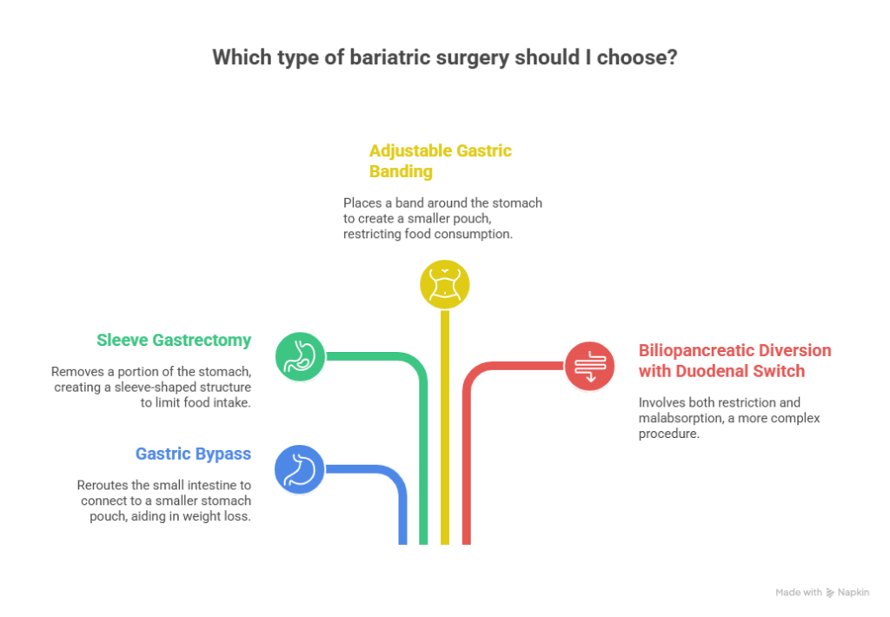
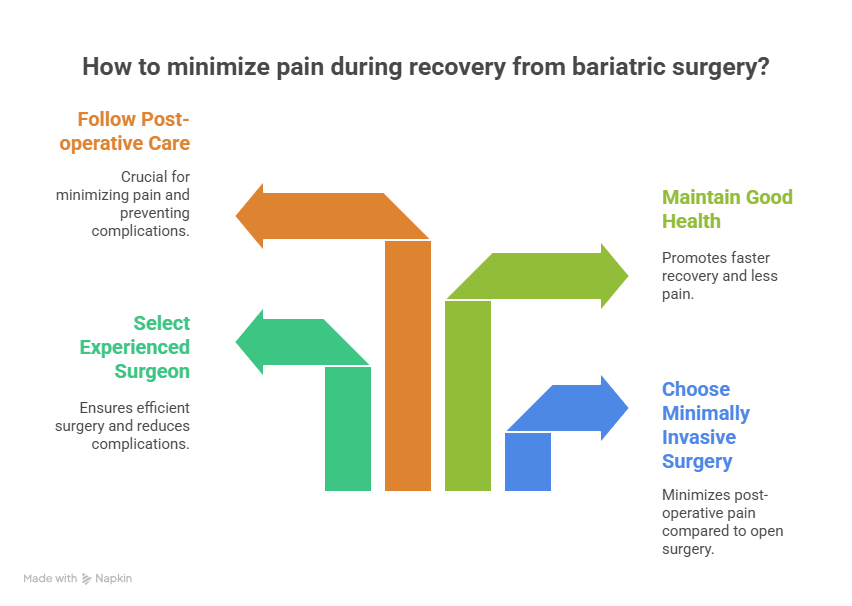

Bariatric surgery is often a life-changing procedure for individuals suffering from obesity and related health conditions. This surgery can significantly improve a person’s quality of life by promoting weight loss and addressing obesity-related diseases, such as type 2 diabetes, hypertension, and sleep apnea. However, a common concern among patients considering this procedure is whether bariatric surgery is painful. This question is understandable, as any surgical procedure can evoke feelings of anxiety regarding potential discomfort and recovery.
Is Bariatric Surgery painful?
In this blog, we will address the question, ‘Is bariatric surgery painful?’ and discuss common concerns related to the surgery and recovery.
Book Your Appointment TodayIn this blog, we will address the question, ‘Is bariatric surgery painful?’ and discuss common concerns related to the surgery, recovery, and the role of a Top Bariatric Surgeon in Delhi NCR in ensuring a smooth and pain-free experience. We will explore what to expect before, during, and after bariatric surgery, as well as the various pain management techniques that are used to minimize discomfort.
What is Bariatric Surgery?
Bariatric surgery refers to a group of surgical procedures designed to help individuals with obesity lose weight. The surgery works by making changes to the digestive system, either by restricting the amount of food the stomach can hold or by altering the way the body absorbs food. There are several types of bariatric surgeries, including:

- Gastric Bypass: A procedure where the stomach is divided into a small upper pouch and a larger lower section, with the small intestine being rerouted to connect to the smaller pouch.
- Sleeve Gastrectomy: A procedure that removes a portion of the stomach, leaving a sleeve-shaped structure that restricts the amount of food that can be consumed.
- Adjustable Gastric Banding: A band is placed around the stomach to create a smaller pouch, limiting the amount of food that can be eaten.
- Biliopancreatic Diversion with Duodenal Switch: A more complex surgery involving both restriction and malabsorption.
Bariatric surgery is most effective for individuals who have not been successful with other weight-loss methods, such as diet and exercise, and who suffer from obesity-related health conditions.
Is Bariatric Surgery Painful?
The answer to the question, Is bariatric surgery painful, depends on various factors, such as the type of surgery, the individual’s pain tolerance, and the expertise of the surgical team. Generally, while some discomfort and pain are expected after the surgery, it is manageable with proper pain management strategies.
1. Pre-Surgery Preparation and Anesthesia
Before answering the question of Is bariatric surgery painful, it is important to understand that pain during surgery is minimized by the use of anesthesia. Anesthesia ensures that the patient is completely asleep and pain-free during the procedure. The anesthesiologist will carefully monitor the patient throughout the surgery to ensure that they remain comfortable and safe.
- What to Expect: You will not feel any pain during the surgery itself due to the anesthesia. After waking up from the procedure, you may feel groggy, but any discomfort will be addressed by pain medications administered by your medical team.
2. Post-Surgery Discomfort and Pain
After the surgery, patients typically experience some level of discomfort, especially during the first few days. This discomfort is often related to the surgical incisions, gas used during the laparoscopic procedure, and the body adjusting to the changes made during surgery.
- What to Expect: For the first few days, you may experience mild to moderate pain around the incision sites, which is common after any type of surgery. You may also experience abdominal bloating or discomfort due to the adjustment in your digestive system.
- Pain Management: Pain management is a priority after bariatric surgery. You will be given prescription medications to manage the pain and make you more comfortable. These medications can be taken as needed for the first few days following surgery.
While some patients may experience more pain than others, the discomfort typically diminishes after the first few days as the body begins to heal. The use of laparoscopic (minimally invasive) techniques has also helped reduce the intensity of pain and the size of incisions, leading to quicker recovery times.
3. How Long Does the Pain Last?
The pain and discomfort after bariatric surgery typically subside within a few days to one week. The first few days after surgery are usually the most uncomfortable, but with proper pain management, the discomfort becomes manageable. By the end of the first week, most patients can return to light activities and experience minimal pain.
- What to Expect: In the first week after surgery, you may still experience some tightness or soreness in the abdomen. You may also have difficulty moving around or lifting heavy objects. However, these symptoms improve quickly as the healing process progresses.
For more complex surgeries, such as gastric bypass or duodenal switch, recovery may take slightly longer, but the pain typically becomes more manageable as time passes. It’s important to follow your surgeon’s instructions regarding post-operative care and pain management.
4. Factors That Influence Pain During Recovery

Several factors influence the level of pain and recovery time after bariatric surgery:
- Type of Surgery: As mentioned earlier, minimally invasive procedures like laparoscopic sleeve gastrectomy tend to have less post-operative pain compared to open surgery.
- Surgeon’s Experience: A skilled Bariatric surgeon can minimize the risks of complications and ensure that the surgery is performed efficiently, leading to less pain during recovery.
- Patient’s Health: Patients who are in good health and have a positive attitude toward recovery tend to experience less pain and recover faster.
- Post-operative Care: Following your surgeon’s instructions regarding wound care, diet, and activity restrictions is crucial for minimizing pain and preventing complications.
5. Long-Term Discomfort and Complications
While the pain from surgery generally decreases after the first few weeks, some patients may experience long-term discomfort as their body adjusts to the new digestive system. This is often due to changes in eating habits, smaller stomach capacity, and the body’s adaptation to weight loss.
- What to Expect: Some patients may experience gas, bloating, or digestive issues as they adjust to their new eating habits. It’s important to maintain regular follow-ups with your Best Bariatric Surgeon in Delhi NCR to ensure that you are healing properly and to address any long-term discomfort.
6. Risks and Complications
While bariatric surgery is generally safe, as with any surgical procedure, there are risks involved. Some complications can lead to increased pain or discomfort during recovery, including:
- Infection: If the surgical site becomes infected, it can cause significant pain and may require additional medical treatment.
- Leaks: In some cases, especially with gastric bypass surgery, leaks can occur in the digestive tract, leading to severe pain, fever, and other symptoms. This is a rare but serious complication.
- Blood clots: Blood clots can cause swelling and pain, and may require treatment to prevent further complications.
It is important to monitor for signs of complications and contact your surgeon immediately if you experience any unusual pain, fever, or swelling.
How to Manage Pain After Bariatric Surgery
To ensure a smooth recovery and minimize discomfort, there are several strategies you can use to manage pain after bariatric surgery:
- Follow post-operative care instructions: It’s essential to follow your surgeon’s advice on wound care, medication use, and activity restrictions.
- Use prescribed pain medications: Your Bariatric Surgeon will prescribe pain medications to help manage your discomfort in the initial days following surgery. Taking these medications as directed will ensure that the pain is under control.
- Rest and take it easy: Allow your body to heal by avoiding strenuous activities and getting plenty of rest.
- Stay hydrated and eat nutrient-rich foods: Staying hydrated and following a healthy diet will help speed up the recovery process and reduce discomfort.
- Engage in light physical activity: Once your surgeon gives you the go-ahead, engage in light activities such as walking to promote circulation and prevent complications.
Is Bariatric Surgery painful?
In this blog, we will address the question, ‘Is bariatric surgery painful?’ and discuss common concerns related to the surgery and recovery.
Book Your Appointment TodayConclusion
In conclusion, is bariatric surgery painful? While some discomfort and pain are to be expected after bariatric surgery, the level of pain is generally manageable with proper pain management techniques. The recovery period can vary depending on the type of surgery, the patient’s overall health, and the surgeon’s skill. Most patients find that the pain decreases significantly within the first few days and that they can return to normal activities within a few weeks.
If you are considering bariatric surgery, it’s essential to consult with an experienced bariatric Surgeon like Dr. Atul Peter’s, who can provide expert care, guide you through the process, and ensure that your recovery is as smooth as possible. Dr. Atul Peters, with his extensive expertise in bariatric surgery, is dedicated to providing the best care and ensuring that patients are comfortable throughout their weight loss journey.
Frequently Asked Questions
1. Is Bariatric Surgery painful?
2. When does the pain start, and how long does it last?
3. Which parts of the body hurt after bariatric surgery?
4. Is laparoscopic bariatric surgery less painful than open surgery?
5. Can diet changes after surgery cause pain?
Recommended Further Reading
Have Personal Health Questions?
Consult with Dr. Atul Peters and our expert multidisciplinary team at Max Smart Super Speciality Hospital, Saket, New Delhi.
Book Your Consultation